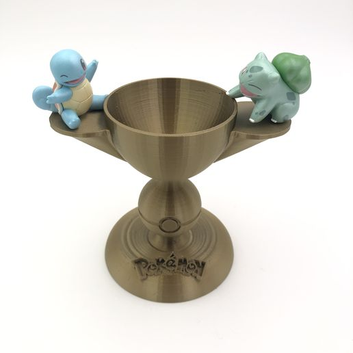

Le jeu de cartes à collectionner Pokémon (JCC), souvent désigné sous son nom anglais Pokémon Trading card game (TCG) est un jeu de cartes à collectionner de la franchise Pokémon. Ce jeu a fait l'objet de différentes adaptations en jeux vidéo et en mangas et a été porté sous forme d'un jeu en ligne sous le titre de Pokémon Trading card game Online.
Histoire :
Face au succès des premiers jeux vidéo Pocket Monsters Vert et Pocket Monsters Rouge au Japon en 1996, un jeu de cartes à collectionner fut l'un des premiers produits dérivés envisagés par Nintendo, l'éditeur des jeux. Les cartes commencent à paraître en novembre 1996, neuf mois après le lancement des jeux. Initialement publiées par Media Factory, les cartes japonaises sont directement éditées par The Pokémon Company depuis 20061. Lors de la parution des jeux à l'international, notamment en Amérique du Nord et en Europe, le JCC Pokémon, de même que la série télévisée, parait avant même la date de sortie des jeux dans un but marketing. La traduction et l'édition des cartes est confiée à la société Wizards of the Coast, filiale du groupe Hasbro, qui édite déjà le plus célèbre des jeux de cartes à collectionner : Magic : L'Assemblée. Les extensions contiennent le plus souvent moins de cartes que leur version japonaise, mais quelques cartes inédites (une cinquantaine toutes extensions confondues) sont également ajoutées par Wizards of the Coast ; certaines cartes non éditées seront regroupées dans deux extensions spécifiques à) l'Amérique du Nord Set de base 2 (2000) et Legendary collection (2002). En 2003, The Pokémon Company reprend la main sur l'édition des cartes en dehors du Japon ; le litige juridique subséquent avec Wizards of the Coast se conclut par un accord en décembre 2003. En France, la distribution des cartes est désormais assurée par Asmodée. En août 2019, un lot de cartes Pokémon de collectionneur (un deck complet de 1999) est vendu aux enchères pour le prix record de 107 010 $.
Règles du jeu :
Matériel nécessaire :
Pour jouer à Pokémon Trading Card Game, il faut : un deck de 60 cartes pour chaque joueur (ou 40 cartes pour les tournois dits « limités », comme lors des Prereleases). un dé, une pièce ou un jeton permettant de jouer à pile ou face. En tournois officiels, seul l'usage de pièces Pokémon ou de dés à 6 faces est autorisé. des marqueurs de dégâts. des marqueurs poison et brûlure. un marqueur « GX ». un plateau de jeu (pour les débutants).
Conditions de victoire :
Un joueur gagne la partie quand :
- il met K.O. le Pokémon défenseur de son adversaire et que ce dernier n'a plus de Pokémon sur le banc.
- il ramasse ses cartes récompenses (dépend des combats).
- son adversaire ne peut pas piocher une carte lors de sa phase de pioche, au début de son tour.
Ligues et Championnats :
 Dans chaque pays ciblé par le Jeu organisé, plusieurs grandes villes accueillent des Ligues Pokémon. Ce sont des sessions de jeu et d’échange entre joueurs, sur deux grands axes : le jeu de cartes et le jeu vidéo. C’est l’idéal pour apprendre à jouer, à se perfectionner, à apprendre de nouvelles techniques et stratégies, ainsi que d’échanger avec les autres joueurs. Ce sont aussi les Ligues qui organisent des championnats locaux ainsi que des « Prereleases ». Ces derniers sont des événements spéciaux organisés pour fêter la sortie d’une nouvelle extension du jeu de cartes, où l’on retrouve des ventes en avant-première, des tournois spéciaux (basés sur la construction de decks à partir des boosters de la nouvelle série, autrement appelé Tournois Scellés), et une distribution de cadeaux et de carte(s) promotionnelles. Les Ligues se retrouvent généralement une fois par semaine ou une fois par quinzaine. En France, ces Ligues sont au nombre de 25 : Ajaccio, Angers, Avignon, Baynes, Bordeaux, Cannes, Connerré, Grenoble, Lille, Longjumeau, Lyon, Marseille, Montebourg, Montpellier, Nancy, Nantes, Nice, Orléans, Paris, Parthenay, Pau, Reims, Rennes, Saint-Étienne et Toulouse. Les Ligues et Tournois permettent donc aux participants de jouer régulièrement tout en préparant les tournois principaux. Ces derniers sont regroupés au sein d'un ensemble appelé la Série des Championnats (Championship Series), qui permettent surtout aux joueurs d’amasser des points en plus des Ligues locales.
Voici la liste de ces tournois :
- Les League Challenges (1 par mois par Ligue)
- Les League Cups (1 par trimestre par Ligue éligible)
- Les Special Event, organisés un peu partout en Europe
- Les Regional Championships, organisés un peu partout en Europe
Le Championnat du Monde :
La Série de Championnats sert à donner l’occasion aux joueurs du monde entier de remporter des lots intéressants et de leur permettre de se qualifier au tournoi le plus important de la saison, le Pokémon Trading Card Game World Championship, organisé depuis 2002 en août en Amérique du Nord. Voici la liste de ces championnats du Monde :
- 2002 : Seattle, USA (Wizards of the Coast)
- 2004 : Kona, Hawaï, USA
- 2005 : San Diego, USA
- 2006 : Anaheim, USA
- 2007 : Kona, Hawaï, USA
- 2008 : Orlando, USA
- 2009 : San Diego, USA
- 2010 : Kona, Hawaï, USA
- 2011 : San Diego, USA
- 2012 : Kona, Hawaï, USA
- 2013 : Vancouver, Canada
- 2014 : Washington D.C., USA
- 2015 : Boston, USA
- 2016 : San Francisco, USA
- 2017 : Anaheim, USA
- 2018 : Nashville, USA
- 2019 : Washington D.C.,USA
- 2020 : Londres, UK4